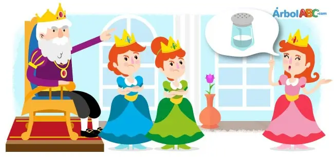
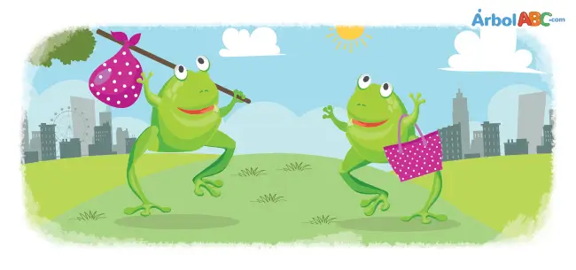
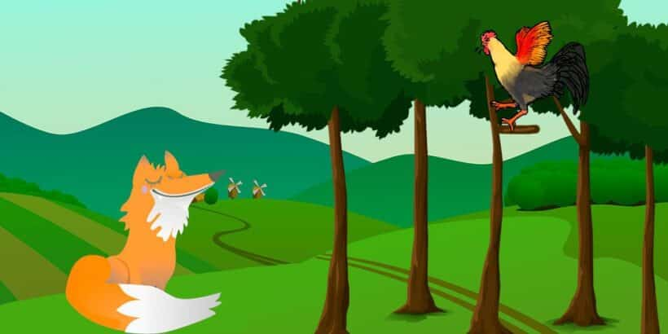

Historias para niños, adolescentes y reflexiones para la vida

Érase una vez un rey orgulloso que vivía con sus tres hermosas hijas. Un día les preguntó cuánto lo amaban. La hija mayor respondió: —Te amo más que al oro y la plata. La segunda hija respondió: —Te amo más que a los diamantes, rubíes y perlas. La hija menor respondió: —Te amo más que a la sal. El rey se enojó con su hija menor por comparar su amor con una especia común, y la desterró de su reino. Una anciana cocinera de la corte, lo había escuchado todo y acogió a la princesa, enseñándole a cocinar y cuidar de su humilde cabaña. La joven era una buena trabajadora y nunca se quejó. Aun así, cada vez que pensaba en su padre, le dolía el corazón por haber malinterpretado su amor. Muchos años después, el rey convocó a los más nobles y ricos a un banquete en celebración de su cumpleaños. Cuando la hija menor del rey se enteró de la noticia, le pidió a la anciana cocinera que le permitiera cocinar para el rey y los invitados. El día de la majestuosa fiesta, se sirvió un exquisito plato tras el otro hasta que no quedó espacio en la mesa. Todo estaba preparado a la perfección, y todos los asistentes elogiaron a la cocinera. El rey esperaba ansioso su plato favorito, el cual lucía delicioso, pero al probarlo se llenó de ira: —Este plato no tiene sal — dijo—, tráiganme a la cocinera. Entonces la hija menor se presentó ante su padre que sin reconocerla le preguntó: —¿Cómo puedes olvidar ponerle sal a mi platillo favorito? La joven princesa le respondió serenamente: —Un día desterraste a tu hija menor por comparar el amor con la sal. Sin embargo, tu cariño le daba sabor a su vida, así como la sal le da sabor a tu plato. Al escuchar estas palabras, el rey reconoció a su hija. Avergonzado, le suplicó que lo perdonara y aceptara regresar al palacio. Nunca más volvió a dudar del amor de su hija. Y colorín, colorado, este cuento se ha acabado.

Esta es la historia de dos ranitas. Ambas vivían muy felices en Japón, pero en diferentes ciudades; una vivía en Kioto y la otra en Osaka. Una mañana, las dos ranitas se despertaron muy aburridas y decidieron que era hora de explorar otros lugares: —Hoy partiré hacia Osaka —se dijo la ranita de Kioto. —Hoy viajaré a Kioto —se dijo la ranita de Osaka. Sin saberlo, las ranitas empacaron sus cosas al mismo tiempo y salieron saltando hasta el camino de la montaña que unía las dos ciudades. El viaje resultó ser más largo de lo planeado y por esas cosas del destino; las dos ranitas, muy agotadas, se detuvieron en la cima de la montaña. Al encontrarse, las dos ranitas se observaron con emoción. Luego, se saludaron y entablaron conversación. Fue así como supieron hacia donde se dirigían. —¡Voy a Osaka! — dijo la ranita de Kioto—. Escuché que es una ciudad esplendorosa. —¡Y yo voy a Kioto! — respondió la ranita de Osaka—. Todos dicen que es una ciudad espléndida. —Es una pena que no seamos más altas— dijo la ranita de Kioto—. Si lo fuéramos, podríamos ver desde lo alto de esta montaña la ciudad que queremos visitar. —¡Tengo una idea! — exclamó la ranita de Osaka—. Parémonos de puntitas con nuestras patas traseras y apoyémonos una a la otra. Así podemos echarle un vistazo a la ciudad a donde vamos. Entonces, las dos ranitas se pararon de puntitas y se tomaron de las patas delanteras para no caerse. La rana de Kioto alzó la cabeza y miró hacia Osaka. La rana de Osaka también alzó la cabeza y miró hacia Kioto —¡Qué decepción! — dijo la ranita de Kioto—. Osaka es igual a Kioto. —¡Qué desilusión! — dijo la ranita de Osaka—. Kioto es igual a Osaka. En ese momento, la ranita de Kioto dijo: —Me alegra que hayamos descubierto esto, ahora podemos ahorrarnos el largo viaje y regresar a casa. Las dos se despidieron y comenzaron a saltar muy felices de vuelta a sus ciudades. Sin embargo, las dos ranitas olvidaron que todas las ranitas del mundo tienen los ojos en la parte de arriba de la cabeza. En realidad, veían lo que estaba atrás y no adelante. ¡La ranita de Kioto estaba mirando hacia Kioto y la de Osaka estaba mirando hacia Osaka!
Cuento Momotaro, el niño melocotón: adaptación de la leyenda popular japonesa. Hace muchos años vivía en el lejano Japón una pareja de ancianos que no había tenido hijos. El hombre era leñador y su esposa le ayudaba en la tarea diaria recogiendo troncos y maderas. Un día salieron los dos al campo y mientras el hombre trabajaba, ella se acercó al río a lavar la ropa ¡Menuda sorpresa se llevó la buena mujer! Flotando sobre las aguas vio un enorme melocotón. Llamó a su marido y entre los dos, consiguieron llevarlo hasta la orilla. Si encontrar un melocotón gigante fue algo muy extraño, más raro fue lo que vieron dentro… Al abrirlo, de su interior salió un pequeño niño de tez blanca que sonriente les miraba con sus grandes ojos negros como el azabache. Los ancianos se pusieron muy contentos y se lo llevaron a casa. Le llamaron Momotaro, pues, en japonés, Momo significa melocotón. Momotaro creció muy sano y fuerte, más que el resto de los niños del pueblo. Con el tiempo se convirtió en un joven bondadoso al que todo el mundo quería y respetaba. Por aquellos años con frecuencia asaltaban la aldea unos demonios que ponían todo patas para arriba, robando todo lo que podían y atemorizando a sus habitantes. La tarde en que Momotaro alcanzó la mayoría de edad, todos propusieron que fuera él quien salvara al pueblo de los molestos demonios. – ¡Es un honor para mí! Iré a Onigashima, la Isla de los Demonios y les daré un buen escarmiento para que no vuelvan por aquí – dijo el joven mientras le ponían una armadura y le daban provisiones para unos días. Dispuesto a cumplir su misión cuanto antes salió del pueblo y tras varias horas caminando, el valiente Momotaro se encontró con un perro. – Hola Momotaro… ¿A dónde vas? – le dijo el animal. – Voy a la isla de Onigashima a derrotar a los demonios. – ¿Me das algo de comer que tengo mucha hambre? – preguntó el can. – Claro que sí. Llevo bolitas de maíz… ¿Te vienes conmigo a la isla y me ayudas? – Sí… ¡iré contigo! – le respondió el perro agradecido. Al ratito, Momotaro y el perro se cruzaron con un mono. – Hola… ¿A dónde vais tan rápido? – Vamos a Onigashima a vencer a los demonios de la isla ¿Quieres venir con nosotros? Llevo ricas bolitas de maíz para todos. El mono aceptó y se unió al grupo a cambio de un poco de alimento. Poco después se les acercó un faisán. – ¿A dónde os dirigís, amigos? – A Onigashima, a ver si conseguimos deshacernos de los demonios- afirmó Momotaro. – Perfecto, me apunto a ayudaros – dijo el faisán con voz algo chillona. A cambio, Momotaro compartió también con él su comida. Llegaron a la costa y el extraño cuarteto embarcó en un velero que les llevó hasta la isla. Cuando avistaron tierra, el faisán voló sobre ella para echar un vistazo y regresó a donde estaba el barco. – ¡Están todos dormidos! ¡Vamos, entremos! – gritó desde el aire a sus compañeros. Desembarcaron y se acercaron a la gran muralla tras la cual se refugiaban los demonios. El mono entró en acción y trepando por el alto muro de piedra, saltó hacia el otro lado y abrió la enorme puerta desde dentro. Bajo las órdenes de Momotaro, todos irrumpieron gritando. – ¡Eh, demonios, salid de vuestro escondite! ¡Dad la cara, no seáis cobardes! Los demonios, recién levantados de su larga siesta, se sorprendieron al ver al chico con los tres animales. Antes de que pudieran reaccionar, el perro empezó a morderles, el faisán a picotear sus cabezas y el mono a arañarles con sus fuertes uñas. Por mucho que los demonios quisieron defenderse, no tuvieron nada que hacer ante un equipo tan valiente y bien organizado. – ¡Ay, ay! ¡Nos rendimos! ¡Dejadnos en paz, por favor! – suplicaban desesperados. – ¡Sólo si prometéis dejar tranquila a la gente de mi aldea! – les gritó Momotaro – ¡No quiero que os acerquéis a ella nunca más! – Sí, sí… ¡Haremos lo que tú digas! – bramaron los demonios sin fuerzas ya para defenderse. – Está bien… ¡Pues ahora devolvednos todo lo que le habéis robado durante años a mi gente! Así lo hicieron. Momotaro y sus pintorescos amigos cargaron una carretilla con cientos de monedas y joyas que los demonios habían quitado a los habitantes de la aldea y se despidieron de la isla para siempre. Al llegar al pueblo, fue recibido como un héroe y compartió el éxito con sus nuevos y fieles amigos.
Cuento de Jorge Luis Borges: Los dos reyes y los dos laberintos ‘Los dos reyes y los dos laberintos’, un cuento de Jorge Luis Borges para adolescentes y adultos Cuentan que hace mucho tiempo, el rey de Babilonia y el rey de Arabia estaban enemistados. El rey de Babilonia, para demostrar al otro rey su poder, mandó construir un laberinto tan complejo que nadie pudiera escapar de él. Un día el rey de Arabia llegó a Babilonia de visita, y este le dijo: – Quiero mostraros las maravillas de nuestra última construcción. Debes acceder por esta puerta y caminar por los pasillos… realmente te quedarás perplejo ante tal obra de arte. El rey árabe, llevado por la curiosidad, entró en el laberinto y se dejó llevar por los cientos de pasillos que lo formaban. Evidentemente, se perdió. Estuvo vagando horas y horas por sus recovecos, hasta que desesperado, pidió ayuda a su Dios y al final consiguió dar con la puerta de salida. «El rey árabe, llevado por la curiosidad, entró en el laberinto» (Los dos reyes y los dos laberintos) La respuesta del rey árabe al ataque del rey de Babilonia en ‘Los dos reyes y los dos laberintos’ El rey árabe no hizo ningún comentario ante el rey de Babilonia. Ni una queja. Se fue y poco después ordenó comenzar una cruenta batalla. Las islas babilónicas quedaron arrasadas y el rey, apresado. Entonces, el rey árabe mandó atar a un camello al rey de Babilonia y lo condujo durante tres días por el desierto. – Tú me mostraste el más bello laberinto que hiciste para mí… Nosotros tenemos un laberinto sin pasillos, sin recovecos, sin puertas de entrada y salida. Quiero que disfrutes de él tanto como disfruté yo del vuestro. Y entonces soltó al rey de Babilonia y le dejó en mitad del desierto. Poco después murió de hambre y sed.
La paradoja de Abilene: por qué hacemos cosas qué no queremos Durante una calurosa mañana de verano, en Coleman (Texas), una familia compuesta por un matrimonio y los suegros, están jugando al dominó tranquilamente junto al porche. Beben limonada y no hacen más que dejar pasar el tiempo de forma perezosa. Su casa se encuentra a unos 53 kilómetros de Abilene. Entonces, al suegro se le ocurre algo: – Podríamos hacer algo más interesante. Por ejemplo, ir hasta Abilene y comer en la cafetería del pueblo… Todos le miran un tanto sorprendidos. El yerno, aunque piensa que es una locura, cree que debe quedar bien con su suegro: – Claro, sí, ¿por qué no? Entonces su mujer, por no llevar la contraria, añade: – Buena idea, cariño… Y por supuesto, la madre, al ver que todos quieren ir, decide no ser la nota discordante para no romper la armonía del grupo: – ¡Iremos! Así que toda la familia se sube al coche, que no tiene aire acondicionado, y conduce hasta Abilene a pesar del agobiante calor. Recorren largos y polvorientos caminos y llegan acalorados al pueblo. Comen un menú mediocre en la cafetería y regresan a Coleman por los mismos largos y polvorientos caminos. Al llegar, todos se retiraron extenuados y acalorados, sin decir nada, pensando en por qué habían hecho ese ridículo viaje que no querían hacer.
Había una vez un príncipe al que le gustaba observar y recapacitar sobre todo lo que veía. Y creía en todo, menos en las princesas, las islas y en Dios. Su padre le había dicho que estas tres cosas no existían y él, como no había visto nunca princesas, islas ni a Dios, creía a su padre. Pero un día, el príncipe decidió salir del reino. Sentía grandes deseos de conocer otros mundos. Y después de cabalgar durante bastante tiempo, llegó hasta el mar. Y a lo lejos vio unos pedacitos de tierra que le parecieron islas, y en ellas, se movían con elegancia unas mujeres que lucían vestidos lujosos. Al príncipe le entró curiosidad y quiso acercarse a esa isla, y comenzó a buscar algún bote. Entonces, un hombre se le acercó y le preguntó: – ¿Qué buscas? – Oh, busco un bote, porque quiero acercarme a aquel lugar… – dijo señalando a la isla. – ¿A esa isla? – ¿Es una isla? Entonces… ¿existen las islas? – ¡Claro que existen! – Vaya… ¿y quiénes son esas mujeres de la isla? – Son princesas- respondió el hombre, que iba muy elegantemente vestido. – Así que existen las princesas… solo falta que me digas que existe Dios. – Claro que existe. Soy yo.- dijo entonces el hombre haciendo una reverencia. El príncipe y el mago: la realidad construida con la magia El Príncipe se quedó atónito, y decidió volver al castillo de su padre. Al llegar, le dijo muy enfadado: – ¡Me has mentido! ¡Me dijiste que no había islas, princesas ni Dios! ¡Y ahora sé que existe! Su padre contestó con calma: – ¿Y cómo sabes que existen? – ¡Los he visto! ¡También he conocido a Dios! – Y ese Dios… ¿vestía de forma elegante y llevaba las mangas recogidas? – Sí. – Te han engañado, hijo. Es un mago. Le conozco… – ¿Un mago? El príncipe, más enfadado aún, fue a buscar al mago y le dijo: – ¿Por qué me engañaste? Ahora sé que eres un mago y me has hecho ver lo que tú has querido que vea… Ahora sí creo más aún a mi padre. – ¿Tu padre? ¿Ese que dice ser rey? ¡Él también es un mago! El príncipe no supo qué decir. Regresó a casa de su padre y le preguntó: – ¿Es verdad que eres un mago? – Sí, es verdad… – ¡Me volviste a engañar! ¿Por qué me haces esto? Ahora mi vida no tiene sentido. Todo es mentira… ¡Prefiero morir! Entonces, el rey (mago) hizo aparecer a la muerte y ésta llamó al príncipe. Pero cuando el joven iba a ir hacia ella, le entró un escalofrío y dio marcha atrás. Recordó entonces las islas falsas pero hermosas y las princesas falsas pero bellas y dijo: – Está bien, padre, puedo aceptar que seas un mago. – Bien, hijo- contestó él- Tú también comienzas a serlo.
Una liebre se burló de la lentitud de la tortuga y la retó a una carrera. Aunque la liebre era mucho más rápida, se durmió durante la competencia. La tortuga, sin detenerse, llegó a la meta primero. La moraleja: "La constancia vence a la velocidad".
La fábula ‘El rey y la peste’ Un rey árabe atravesaba el desierto cuando de pronto se encontró con la peste. El rey se extrañó de encontrarla en aquel lugar: – Detente, peste, ¿a dónde vas tan deprisa? – Voy a Bagdad- respondió entonces ella- Pienso llevarme unas cinco mil vidas con mi guadaña. Unos días después, el rey volvió a encontrarse en el desierto con la peste, que regresaba de la ciudad. El rey estaba muy enfadado, y dijo a la peste: – ¡Me mentiste! ¡Dijiste que te llevarías a cinco mil personas y murieron cincuenta mil! – Yo no te mentí- dijo entonces la peste– Yo sesgué cinco mil vidas… y fue el miedo quien mató al resto.

El gallo y la zorra’, una fábula corta sobre las consecuencias del miedo que nos bloquea Un día un gallo se alejó del gallinero y se adentró en el campo, sin pensar en el peligro que podía correr, cuando lo vio una zorra, que se le fue acercando muy sigilosamente para matarlo. Al verla, el gallo se subió a un árbol que estaba un poco alejado de los otros. Viendo la zorra que el gallo estaba fuera de su alcance, tomó gran pesar porque se le había escapado y empezó a pensar cómo podía atraparlo. Así que fue al árbol y comenzó a halagar al gallo, rogándole que bajase y siguiera su paseo por el campo; pero el gallo no se dejó convencer. Viendo la zorra que con halagos no conseguiría nada, empezó a amenazar diciéndole que, si no se fiaba de él, ya le buscaría motivos para arrepentirse. Mas como el gallo se sentía a salvo, no hacía caso de sus amenazas ni de sus halagos. Cómo consiguió la zorra cazar al gallo en ‘El gallo y la zorra’ Cuando la zorra comprendió que no podría engañarlo con estas tretas, se fue al árbol y se puso a roer su corteza con los dientes, dando grandes golpes con la cola en el tronco. El infeliz del gallo se atemorizó sin razón y, sin pensar que aquella amenaza de la zorra nunca podría hacerle daño, se llenó de miedo y quiso huir hacia los otros árboles donde esperaba encontrarse más seguro y, pues no podía llegar a la cima de la montaña, voló a otro árbol. Al ver la zorra que sin motivo se asustaba, empezó a perseguirlo de árbol en árbol, hasta que el gallo cayó agotado y la zorra consiguió cogerlo y comérselo
Este cuento nos enseña que a menudo las pequeñas cosas de la vida tienen un valor mucho mayor del que creemos. La sal, algo aparentemente simple y cotidiano, puede ser esencial, así como las virtudes humanas como la bondad, el esfuerzo y la humildad. A veces, en nuestra impulsividad o falta de entendimiento, tendemos a subestimar lo importante o lo que parece insignificante, sin darnos cuenta de su verdadero valor.
El cuento de las dos ranitas nos invita a reflexionar sobre la perseverancia y la actitud ante los retos de la vida. A menudo, enfrentamos obstáculos que nos hacen dudar de nuestras capacidades y nos invitan a rendirnos. Sin embargo, la clave no está en la dificultad del camino, sino en nuestra capacidad para seguir adelante, paso a paso, sin dejar que la desesperanza nos derrote. La rana que perseveró no se detuvo ante las dificultades porque comprendió que cada esfuerzo la acercaba más a su meta, y al final, la satisfacción de haber alcanzado la cima fue mucho mayor que el desánimo que pudo haber sentido en el camino.
El cuento de las dos ranitas nos invita a reflexionar sobre la perseverancia y la actitud ante los retos de la vida. A menudo, enfrentamos obstáculos que nos hacen dudar de nuestras capacidades y nos invitan a rendirnos. Sin embargo, la clave no está en la dificultad del camino, sino en nuestra capacidad para seguir adelante, paso a paso, sin dejar que la desesperanza nos derrote. La rana que perseveró no se detuvo ante las dificultades porque comprendió que cada esfuerzo la acercaba más a su meta, y al final, la satisfacción de haber alcanzado la cima fue mucho mayor que el desánimo que pudo haber sentido en el camino.
El cuento nos invita a reflexionar sobre el impacto que nuestras decisiones tienen sobre los demás, especialmente cuando se trata de lo que damos, ya sea poder, ayuda o recursos. La forma en que ofrecemos algo puede tener consecuencias muy diferentes. El primer rey, aunque puede parecer severo al crear un laberinto difícil, tiene una intención de fortalecer a su pueblo, enseñándoles a ser autosuficientes y resilientes. El desafío que impone es, en última instancia, una lección de independencia y autoconocimiento. Este rey está dispuesto a dar a su pueblo la oportunidad de aprender a enfrentarse a la adversidad por sí mismos, en lugar de mantenerlos en un estado de dependencia. Por otro lado, el segundo rey refleja una actitud egoísta. Aunque también ofrece un laberinto, lo hace con la intención de atrapar a su pueblo y mantenerlo bajo su control. En lugar de empoderar, su objetivo es que la gente dependa de él y nunca encuentre la salida, lo que los deja atrapados en su propio sufrimiento. Esto nos muestra cómo lo que damos puede tener efectos negativos si nuestra motivación es egoísta o destructiva. Este cuento también destaca el concepto de "cuidado con lo que das", ya que nuestras acciones pueden tener implicaciones profundas. Si no somos conscientes de las consecuencias de lo que damos, podemos terminar haciendo más daño que bien, incluso si nuestras intenciones parecen ser positivas.
La Paradoja de Abilene es un excelente ejemplo de cómo las presiones sociales, el deseo de agradar y el temor al conflicto pueden llevar a decisiones que no reflejan lo que realmente queremos. Este fenómeno ocurre cuando, en un grupo, cada persona asume que los demás quieren algo, y por lo tanto, todos actúan de manera contraria a sus propios deseos. En lugar de expresar sus verdaderos pensamientos y deseos, todos suponen que los demás esperan algo diferente, lo que lleva a una "falsa unanimidad". En muchos casos, este tipo de situaciones no ocurre de manera consciente, sino que es un resultado del pensamiento grupal. Las personas se sienten presionadas a seguir el flujo del grupo, aunque eso no refleje sus deseos personales, ya sea por evitar la incomodidad de ir en contra o por temor a ser juzgados. Es un ejemplo claro de cómo la falta de comunicación abierta y sincera dentro de un grupo puede generar una dinámica donde las decisiones no se basan en los intereses de los individuos, sino en lo que parece ser esperado por los demás. La paradoja también resalta cómo la falta de autoconfianza o la inseguridad puede jugar un papel clave. Si no tenemos claro lo que realmente queremos, es fácil dejar que los demás decidan por nosotros. Además, el miedo al rechazo o a quedar fuera del grupo puede nublar nuestro juicio y hacernos actuar en contra de nuestros propios intereses.
El cuento de "El Príncipe y el Mago" es una reflexión sobre cómo la búsqueda constante de lo material, la perfección o el poder puede llevarnos a la insatisfacción y al vacío. El príncipe representa a muchas personas que, a pesar de tener lo que parece ser la vida perfecta o estar rodeados de lujos, sienten que algo les falta. La magia que le concede el mago simboliza el deseo de obtener algo externo, como riquezas, poder o belleza, con la esperanza de que eso resolverá los problemas internos o proporcionará la felicidad. Sin embargo, el cuento nos enseña que la verdadera felicidad y el propósito en la vida no se encuentran en lo exterior, sino en la autocomprensión, el propósito personal y la aceptación de lo que tenemos. La magia, por muy poderosa que sea, no puede reemplazar el trabajo interno que cada persona debe hacer para encontrar paz y satisfacción. El príncipe, al obtener todo lo que deseaba, se da cuenta de que la verdadera riqueza no está en tenerlo todo, sino en saber apreciarlo y encontrar valor en lo que ya se tiene. Este cuento también puede interpretarse como una crítica a la sociedad consumista en la que muchas veces se nos enseña a desear más y más, sin considerar que el exceso no siempre lleva a la felicidad. El príncipe, en su búsqueda de algo más, pierde de vista lo que realmente es importante: la experiencia humana, la conexión con los demás y el crecimiento personal.
Este cuento es una poderosa lección sobre la importancia de la constancia y la perseverancia. Aunque la liebre es mucho más rápida y tiene una clara ventaja inicial, su arrogancia y falta de disciplina la llevan a subestimar a la tortuga, que, aunque más lenta, no se detiene nunca. La tortuga representa a las personas que, aunque no tienen ventajas aparentes, logran alcanzar sus metas gracias a la persistencia y a no rendirse nunca. La historia también pone en evidencia cómo el desdén por los demás o la falta de humildad pueden llevarnos a la derrota. La liebre no valoró la importancia del esfuerzo continuo y de mantenerse enfocado, mientras que la tortuga, aunque más lenta, nunca perdió su propósito. Este contraste nos invita a reflexionar sobre cómo en la vida, la paciencia y la constancia son tan importantes como el talento o las habilidades naturales. Además, el cuento enseña que el éxito no siempre depende de las habilidades naturales o la rapidez, sino de la disciplina y el esfuerzo. Muchas veces, en la vida real, las personas que parecen tener más ventajas o talento no siempre son las que tienen éxito. Aquellos que siguen adelante con esfuerzo y determinación, incluso cuando las probabilidades están en su contra, son los que finalmente logran sus objetivos.
El cuento de "El Rey y la Peste" ofrece varias lecciones profundas sobre cómo enfrentamos las dificultades y las adversidades en la vida. El rey representa a muchas personas que, al enfrentar problemas o crisis, buscan soluciones inmediatas y fáciles, esperando que haya una respuesta mágica o externa que resuelva todo. Sin embargo, la vida no siempre nos da respuestas fáciles, y a veces los problemas son inevitables, como la peste en el cuento. El consejo del ermitaño es crucial: aceptar la realidad tal como es, sin negar la existencia del problema, es el primer paso para encontrar una solución. A menudo, la negación o el deseo de que todo se resuelva rápidamente solo alarga el sufrimiento. Aceptar una situación difícil no significa rendirse ante ella, sino que nos permite enfocarnos en lo que realmente podemos hacer: ayudar, actuar con compasión y tomar decisiones responsables. La responsabilidad y el liderazgo también son temas importantes en el cuento. El rey inicialmente busca un escape a través de soluciones rápidas, pero al final se da cuenta de que su verdadero papel como líder es estar al lado de su pueblo, guiarlos con valentía, y actuar con humildad para enfrentar la crisis juntos. Este tipo de liderazgo no se basa en la perfección ni en el control absoluto de las circunstancias, sino en la capacidad de enfrentar lo inesperado con resiliencia y actuar con empática disposición hacia los demás.
Este cuento, al igual que muchos fábulas de Esopo, nos ofrece una reflexión sobre los peligros del halago y la manipulación. La zorra utiliza la adulación para engañar al gallo, quien se siente halagado y cree que sus elogios son genuinos. Esto refleja cómo, en la vida real, las personas a veces nos dicen lo que queremos escuchar para conseguir algo de nosotros. El gallo, al dejarse llevar por los elogios, pierde de vista su seguridad y cae en la trampa de la zorra. Sin embargo, el gallo también representa la inteligencia y la precaución que debemos tener ante quienes nos rodean. Aunque en principio cae en el engaño, es consciente de su situación y reacciona de manera rápida y efectiva para salvarse. Esto nos enseña que, aunque las manipulaciones pueden ser poderosas, también podemos aprender a reconocerlas y actuar en consecuencia. El halago vacío es una herramienta común de manipulación. A menudo, las personas que nos rodean pueden hacernos sentir importantes o valiosos con el fin de obtener algún beneficio personal. En este caso, la zorra no tenía interés genuino en el gallo, sino que solo lo usaba para su propio propósito. Esto nos recuerda la importancia de mantener la humildad y de no dejarnos llevar por la vanidad o los cumplidos superficiales, sino de valorar nuestro verdadero valor y las intenciones detrás de las palabras.
La princesa aprendió que no todo lo que parece sencillo es sin importancia. El rey le enseñó que las pequeñas cosas, aunque no siempre sean visibles o llamativas, tienen un impacto profundo y esencial en nuestras vidas. La lección final es que debemos ser conscientes del valor de las pequeñas acciones y de lo que realmente importa, como la humildad, la paciencia y el respeto hacia los demás.
La enseñanza principal de este cuento es que, aunque los desafíos puedan parecer abrumadores, lo importante es continuar sin rendirse. La perseverancia, la actitud positiva y la capacidad de seguir adelante son claves para superar las dificultades. A veces el camino parece largo y difícil, pero si mantenemos la fe en nosotros mismos y en nuestros esfuerzos, podemos lograr lo que nos proponemos. El valor de este cuento radica en que nos recuerda que, independientemente de lo difíciles que sean las circunstancias, siempre podemos seguir avanzando y, con el tiempo, cosechar los frutos de nuestra perseverancia.
La enseñanza principal de este cuento es que, aunque los desafíos puedan parecer abrumadores, lo importante es continuar sin rendirse. La perseverancia, la actitud positiva y la capacidad de seguir adelante son claves para superar las dificultades. A veces el camino parece largo y difícil, pero si mantenemos la fe en nosotros mismos y en nuestros esfuerzos, podemos lograr lo que nos proponemos. El valor de este cuento radica en que nos recuerda que, independientemente de lo difíciles que sean las circunstancias, siempre podemos seguir avanzando y, con el tiempo, cosechar los frutos de nuestra perseverancia
La lección central de "Los dos reyes y los dos laberintos" es que lo que damos y cómo lo damos tiene un gran impacto en los demás. No se trata solo de dar por dar, sino de hacerlo de manera que empodere y fortalezca a los otros, sin esperar control o beneficio personal. El primer rey, aunque crea un desafío, lo hace con la intención de hacer crecer a su pueblo, dándoles la oportunidad de superar sus propios obstáculos. En cambio, el segundo rey, al construir un laberinto de dependencia, crea una situación en la que su pueblo no puede avanzar ni aprender. Este cuento nos enseña que, al ofrecer algo a los demás, debemos tener cuidado con nuestras motivaciones. La verdadera generosidad no busca control ni sometimiento, sino empoderar y liberar. Un líder o una persona generosa debe pensar en el bienestar de los demás a largo plazo, promoviendo su autonomía y capacidad de superar dificultades, en lugar de hacerlos dependientes. El mensaje final es claro: cuidado con lo que das, porque puede terminar atrapando a quienes pretendes ayudar, si no lo haces con la sabiduría y el amor necesarios.
La Paradoja de Abilene nos enseña la importancia de la comunicación honesta y abierta dentro de los grupos, ya sea una familia, un equipo de trabajo o una comunidad. Para evitar caer en esta paradoja, debemos asegurarnos de que cada persona pueda expresar sus pensamientos y deseos sin temor a ser juzgada o rechazada. Solo a través del diálogo sincero se pueden tomar decisiones que reflejen los intereses y el bienestar de todos los involucrados, en lugar de asumir que todos piensan de la misma manera o esperan lo mismo. La lección principal es que debemos ser conscientes de la presión social y de cómo puede influir en nuestras decisiones. A veces, lo que parece una decisión unánime del grupo es, en realidad, un resultado de malentendidos y suposiciones. Es crucial cuestionar las decisiones colectivas y tener el valor de expresar nuestras opiniones y deseos personales, incluso si van en contra de lo que parece ser la "opinión del grupo". Esto no solo nos ayuda a tomar decisiones más auténticas y alineadas con nuestros propios deseos, sino que también fomenta una cultura de respeto y comprensión mutua. En resumen, la paradoja nos recuerda que, aunque pertenecer a un grupo es importante, no debemos sacrificar nuestra individualidad ni tomar decisiones en contra de nuestros propios intereses solo para encajar o evitar conflictos. La autenticidad y la comunicación clara son claves para evitar caer en la trampa de las expectativas no expresadas del grupo.
La lección principal del cuento de "El Príncipe y el Mago" es que la verdadera felicidad no se encuentra en los deseos superficiales ni en el poder o la perfección externa. El príncipe obtiene todo lo que cree que necesita, pero al final, se da cuenta de que la magia no puede reemplazar la paz interior ni la satisfacción genuina. Este cuento nos recuerda que, en lugar de buscar soluciones rápidas o soluciones mágicas a nuestros problemas, debemos centrarnos en encontrar el propósito y la gratitud por lo que ya tenemos. La felicidad no está en lo que adquirimos o logramos, sino en cómo vivimos y nos relacionamos con nuestro entorno y con nosotros mismos. La satisfacción verdadera proviene de aceptar nuestra vida tal como es, con sus altibajos, y de encontrar significado en las experiencias cotidianas. En resumen, la reflexión final del cuento es que, a veces, lo que más necesitamos no es algo externo que nos cambie, sino un cambio interno: aprender a valorar lo que tenemos, buscar un propósito más profundo y aceptar que la perfección no es la clave de la felicidad.
La lección más importante de "La Tortuga y la Liebre" es que la constancia y el esfuerzo a largo plazo pueden superar la velocidad y el talento natural. La tortuga ganó porque, a pesar de su lentitud, nunca dejó de avanzar y siguió su camino de manera disciplinada. Este cuento nos recuerda que no siempre debemos compararnos con los demás o sentirnos derrotados por nuestras aparentes limitaciones. Si somos constantes y trabajamos con dedicación, podemos alcanzar nuestras metas, independientemente de las circunstancias o de cuán rápido o talentoso parezca el resto. La clave no está en ser el más rápido o el más fuerte, sino en ser constante, mantenernos enfocados en nuestros objetivos y no rendirnos ante los obstáculos. Reflexión final: Al igual que la tortuga, todos podemos alcanzar el éxito si no nos dejamos vencer por la impaciencia o el desánimo. A veces, la perseverancia es más poderosa que la rapidez, y el esfuerzo constante es el que finalmente nos lleva a la meta.
La lección principal de "El Rey y la Peste" es que, cuando enfrentamos dificultades en la vida, no siempre hay respuestas fáciles ni soluciones inmediatas. En lugar de buscar culpas o soluciones mágicas, debemos aceptar la realidad de la situación, actuar con responsabilidad y trabajar en conjunto con los demás para superar las adversidades. El liderazgo, tanto en un reino como en nuestra vida personal, no radica en tener todas las respuestas, sino en saber enfrentar las dificultades con sabiduría, valentía y empatía. El cuento también nos enseña que la verdadera fuerza no está en el control absoluto o en la negación de los problemas, sino en nuestra capacidad de adaptarnos a las circunstancias y trabajar por el bien común. Al final, el rey no encuentra una solución mágica a la peste, pero logra hacer lo que está a su alcance para ayudar a su pueblo, y esa es la verdadera esencia de un buen líder y de una persona resiliente. Reflexión final: En nuestra vida cotidiana, muchas veces enfrentamos situaciones fuera de nuestro control, como problemas familiares, enfermedades o crisis sociales. En lugar de buscar culpables o soluciones rápidas, debemos aprender a aceptar la realidad y enfocarnos en lo que podemos hacer, paso a paso, para mejorar nuestra situación y apoyar a quienes nos rodean. La verdadera sabiduría está en reconocer que lo que realmente podemos controlar es nuestra actitud frente a la adversidad.
La enseñanza principal de "El Gallo y la Zorra" es la importancia de no dejarnos engañar por los halagos vacíos. A veces, las personas pueden alabar nuestras cualidades o logros solo para manipularnos en beneficio propio. Es esencial ser conscientes de cuando nos están utilizando y tener la prudencia de mantener nuestra guardia alta ante las manipulaciones. El gallo, aunque inicialmente cae en la trampa de la zorra, es capaz de reaccionar rápidamente y escapar. Esto subraya que, aunque todos podemos ser engañados en algún momento, siempre hay espacio para aprender y actuar de forma más inteligente en el futuro. Reflexión final: En la vida cotidiana, debemos aprender a reconocer los halagos y las manipulaciones que no tienen una base genuina, y enfocarnos en las relaciones que nos brindan un apoyo verdadero. Es fundamental no dejarse llevar por la vanidad ni por los cumplidos superficiales, y siempre mantener una actitud de autenticidad y cautela. La clave está en confiar en nuestra intuición y no dejar que los halagos vacíos nos desvíen de nuestro camino o nos hagan perder la perspectiva.